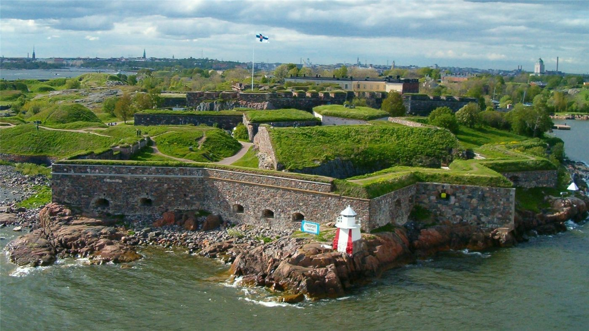

핀란드, 오랜 핵무기 금지 해제…나토 협력 심화
핀란드가 오랫동안 유지해 온 핵무기 관련 금지를 해제하기로 했다. 지정학적 현실에 대응해 나토와의 협력을 깊게 하려는 행보다.
진태흥 기자 · 2026.06.18
橋국제·유럽

자유시보는 핀란드가 오랜 기간 유지해 온 핵무기 관련 금지를 해제하고, 북대서양조약기구(NATO)와의 협력을 심화하기로 했다고 전했다. 변화하는 안보 환경에 대응한 조치라는 설명이다.
광고 문의 · 300×250핀란드는 러시아와 긴 국경을 맞댄 나라로, 나토에 가입하며 안보 정책의 방향을 크게 바꿔 왔다. 이번 결정은 동맹 차원의 억지력에 더 깊이 참여하겠다는 의미로 읽힌다.
핵 관련 정책의 변화는 주변국과 역내 안보 지형에 파장을 준다. 억지력 강화와 긴장 고조 우려가 동시에 제기되는 민감한 사안이다.
華橋時報는 이를 유럽 안보 지형의 변화로 사실 위주로 전한다. 안보 환경의 변화는 무역·에너지 등 경제 전반에도 영향을 미친다.
출처·참고 (사실 확인용 — 본문은 직접 재작성)
· 自由時報
· 自由時報